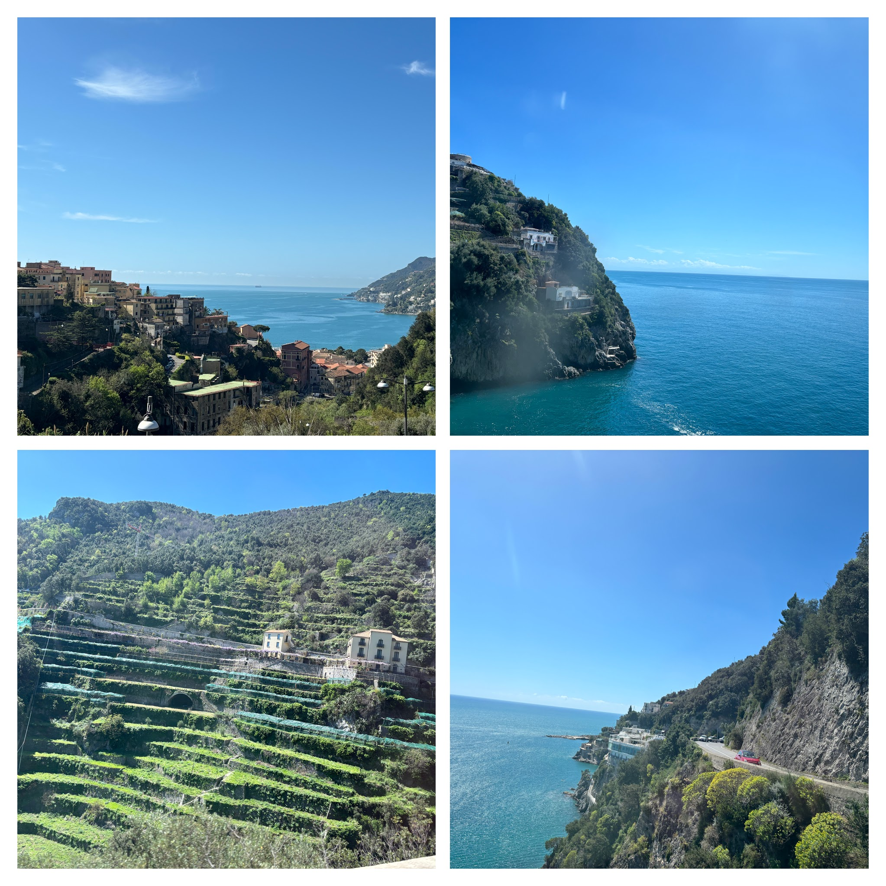
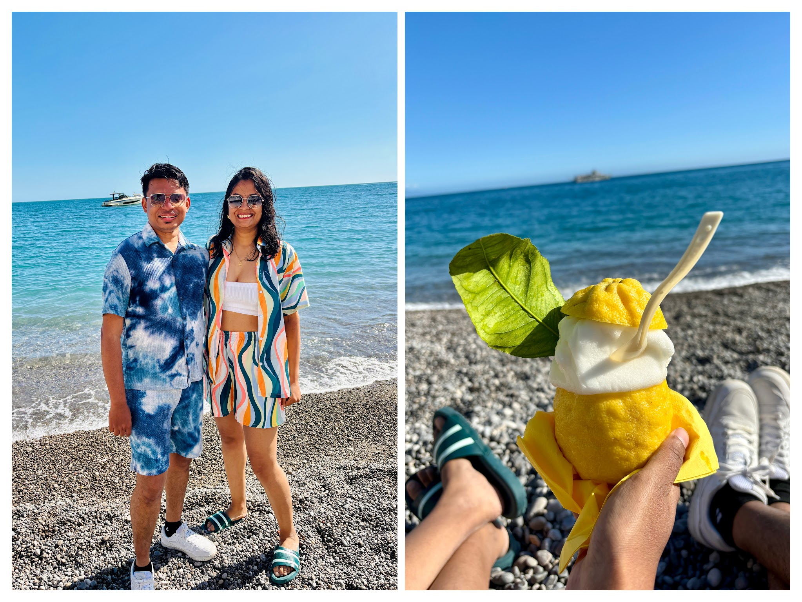
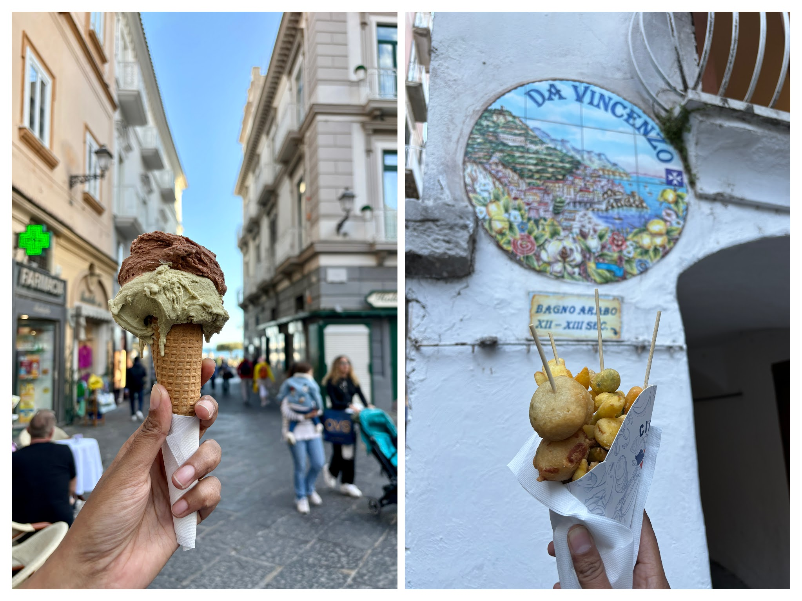
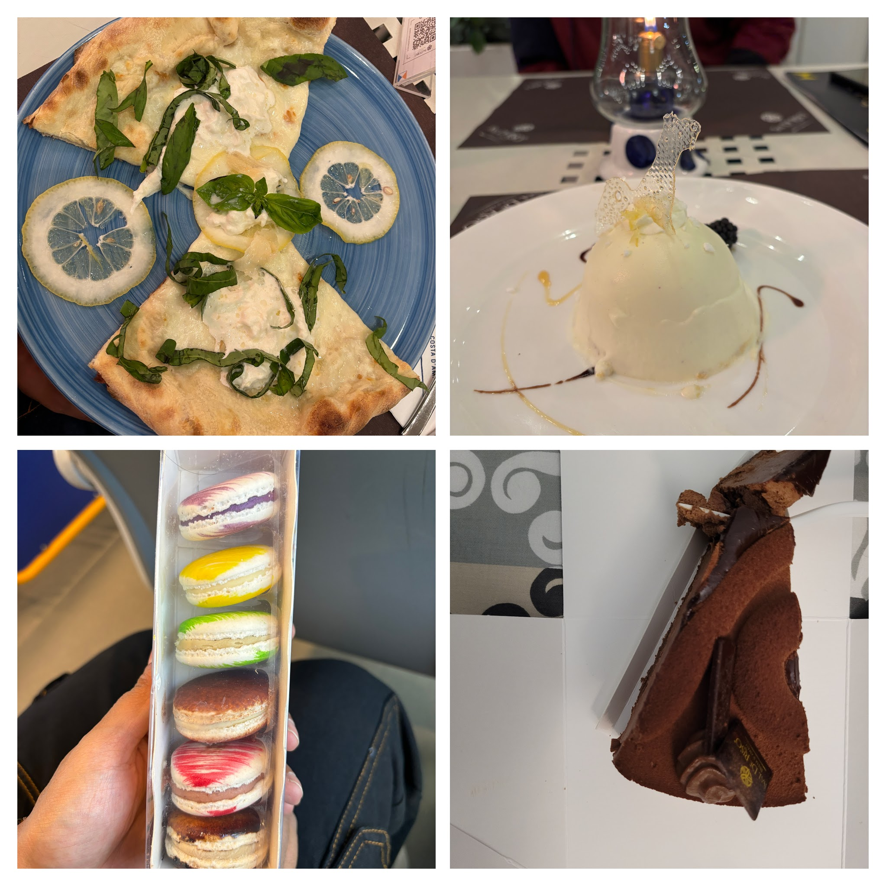

Day 1: Arrival — Salerno, Vietri & the Road to Amalfi
Sometimes, the universe has its own plans. It throws a few curveballs just to see how you respond—and then, in its own mysterious way, makes it all worth it.
Our journey began with a train from Roma Termini to Salerno, followed by a connection to Vietri Sul Mare. We reached Salerno around 9:30 AM, only to discover that the train to Vietri wasn’t running due to station work. After some confusion and a bit of hustle, we learned we had to take a bus instead.
But the surprises didn’t stop there.
We boarded the bus thinking we were heading to Amalfi, only to realize—midway—that Vietri Sul Mare and Amalfi are two different places. We got off at Vietri, slightly bewildered, and met a couple from Pune who had made the same mistake. Misery loves company, right?
Now we had two choices: wait at Vietri for a bus to Amalfi or return to Salerno and catch a bus from there. The catch? Buses from Salerno to Amalfi run every two hours. If we missed one, we’d be stuck again. We took the gamble, rushed back to Salerno, and thanks to Harshit’s quick thinking—managed to grab the next bus just in time. Bonus: we got great seats!
The ride from Salerno to Amalfi was nothing short of breathtaking. The Tyrrhenian Sea sparkled beside us, lemon groves lined the hills, and the air was filled with the scent of citrus and salt. No photo could do it justice. It was one of those rare moments where your brain just stops and soaks it all in.

We got off at Minori, one stop before Amalfi, since our apartment was just a short walk away. And what an apartment! It instantly became our second favorite after our Paris stay. A charming gate, a tiny garden, a fountain nearby, and the sea right across the road. Oh, and just two minutes from the famous Pasticceria Sal De Riso—home to the legendary Delizia al Limone.
We had 20 minutes to freshen up before catching the next bus to Amalfi. The host was still setting up the apartment, but we quickly changed, packed some snacks, and made it just in time.
Amalfi itself was beautiful, though a bit overhyped—at least the part we explored. Maybe Sorrento or Capri would’ve been more impressive. Still, the village charm, the coastal breeze, and the pizza we devoured by the sea (after lugging our bags around all day) made it all worthwhile.
Eventually, we gave in and dipped our feet into the sea. It was cold, but refreshing. We don’t know how to swim, so we didn’t venture far, but it was fun. We changed nearby, relaxed on the beach, and clicked one of our favorite photos ever. Harshit brought lemon sorbet to the shore, and we even bumped into the Pune couple again for a sweet goodbye.

We wandered through Amalfi village, tried a delicious veg cuoppo from Cuoppo d’Amalfi, sampled lemon chocolates, and even considered buying limoncello—but it was pricey, and honestly, I find alcohol bitter. Still, the lemon-infused everything—from pizza to desserts—was a delightful surprise.

Later, we met a honeymooning couple from Delhi who had just visited Capri. Their verdict? Expensive, but worth it.
We bought our tickets for the next day’s journey back to Salerno and returned to Minori. And if your apartment is by the sea, honestly, you don’t need anything else.
Dinner that night was magical. We dined at Sal De Riso, just steps from our apartment. Candlelight, sea breeze, soft music, and incredible food—it was the perfect romantic dinner with my Golu. Yes, Golu, not Harshit. That’s how perfect it was.
They even customized a non-veg pizza into a veg one for us. From the pizza to the desserts to the chocolates—everything was top-notch. The only downside? The seating and cutlery charges were sky-high. But hey, it’s Italy. We knew what we were signing up for.
We packed some macarons, and at the counter, a woman helped us while a futuristic machine handled the payment and change. Automation, Italian-style.

Day 2: Sea-Side Morning & Departure
Back at the apartment, we packed and slept early. Our next day started at 6 AM with a bus to Salerno, and a train from there to Naples. We made one last mistake—forgetting that Vietri Sul Mare station was closed and planning to get off there. But that’s travel. You miss signs, you make mistakes, and you learn.
And sometimes, the universe throws in a lemon. But in Amalfi, that’s just another way to make something sweet.
Amalfi Coast EpilogueMust-Visit Places in Amalfi Coast
If you ever find yourself in the Amalfi region, here are some incredible spots to explore:
- Amalfi Coast Drive: Take a bus or drive along this breathtaking coastal cliff road.
- Duomo di Amalfi: Marvel at the grand steps and Moorish architecture of this cathedral.
- Path of the Gods: Hike this historic cliffside trail for infinite Tyrrhenian sea views.
- Villa Rufolo: Stroll through medieval gardens looking down onto the Ravello coastline.
- Grotta dello Smeraldo: Explore the emerald green lights inside this natural sea cave.
- Fiordo di Furore: Snap photos of the dramatic high bridge over a hidden rocky beach gorge.
- Amalfi Paper Museum: Discover ancient medieval watermill paper craft.
- Valle delle Ferriere: Hike among streams and lush waterfalls in this quiet valley.